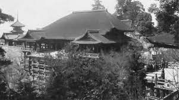

Kioto (京都市 Kyōto-shi?, en español «ciudad capital»; Pronunciación japonesa: Acerca de este sonido [kʲoːto] (?·i)) es una importante ciudad de Japón, localizada en la parte central de la isla de Honshu. Es la capital de la prefectura homónima y tradicionalmente también ha sido considerada capital de la región de Kansai, aunque esta sea solo una referencia geográfica más que un territorio administrativo concreto. Así mismo, está integrada dentro de la región metropolitana de Keihanshin, compuesta por las áreas circundantes de las ciudades de Osaka, Kobe y la misma Kioto.5 Cuenta con una población de alrededor de 1 465 000 habitantes (a fecha de 2020), situándose entre las ciudades japonesas más pobladas.2 El área total del territorio de la ciudad es de 827,83 km². Su importancia histórica se debe al hecho de que entre los años 794 y 1868 constituyó la capital de Japón, acogiendo la sede de la Corte imperial y otras instituciones. En el año 1868, el emperador Meiji decidió trasladar la sede de la corte a Tokio, quedando la ciudad definitivamente en un segundo plano. Durante la Segunda Guerra Mundial fue la única gran ciudad japonesa que no resultó bombardeada por la fuerza aérea estadounidense. Por esta razón, a día de hoy sigue constituyendo una de las importantes urbes japonesas, con un rico patrimonio histórico, artístico y arquitectónico. El 11 de diciembre de 1997 tuvo lugar en esta ciudad la firma de un protocolo que perseguía el objetivo de reducir las emisiones de gases de efecto invernadero causantes del calentamiento global.6 El acuerdo internacional acabaría siendo conocido popularmente como el Protocolo de Kioto.6 Kioto dispone de una red desarrollada de transporte por carretera y ferrocarril. Aunque no dispone de aeropuerto propio, existen en las cercanías dos aeropuertos internacionales, como los de Osaka y Kansai. Su patrimonio histórico y monumental, y sus diversos espacios escénicos y culturales la convierten en un importante centro receptor de turismo (tanto nacional como internacional). Entre sus monumentos más representativos se encuentran el Palacio Imperial, el Castillo de Nijō, el Kinkaku-ji y el Ginkaku-ji, o el Santuario Heian y el Fushimi Inari-taisha, además de otros muchos. Desde el año 1994, parte de estos monumentos están reconocidos por la Unesco como Patrimonio de la Humanidad, junto a otros monumentos localizados en las ciudades de Uji y Otsu.7 La Universidad de Kioto, fundada en 1897 y con 22 192 alumnos, es considerada como una de las mejores universidades en Japón.8 De acuerdo con el ranking del magacín británico Times Higher Education, la Universidad de Kioto quedaría en segunda posición entre las universidades niponas y en la 25.ª posición entre todas las universidades del mundo.
¿Cómo llegar?
A Kioto se accede en tren bala desde la mayoría de ciudades de Japón. Los aeropuertos internacionales más cercanos son el de Itami y el de Kansai. Ambos se encuentran en la prefectura de Osaka, a entre 1 hora y 1 hora y 20 minutos de la ciudad.
La ciudad de Kioto es uno de los principales destinos de muchos viajeros y está bien conectada con ciudades como Tokio, Osaka o Nagoya, entre otras, mediante la línea de tren bala Tokaido. Los trenes de cercanías con paradas en Osaka también son una buena opción de transporte. Podrás acceder a otras ciudades de la prefectura de Kioto y la península de Tango en trenes y autobuses regionales. Desde la estación de Kioto se tarda poco más de dos horas hasta Miyazu, en la costa de Tango. Desde allí, se puede coger un autobús hasta Ine y las playas de la zona. Si deseas disfrutar de mayor libertad a la hora de desplazarte, puedes alquilar un coche.
No te pierdas...
- Los majestuosos templos, santuarios, palacios y jardines de la ciudad de Kioto y sus alrededores. Da click aqui para mas información.
- La variada y exquisita gastronomía kaiseki y los refinados alojamientos locales o ryokan tradicionales.Da click aqui para mas información.
- Las playas de arena blanca y las aguas termales ricas en minerales de la península de Tango
- Amanohashidate, uno de los tres lugares más espectaculares de Japón
- Aspectos relevantes por estacion del año.Da click aqui para mas información.